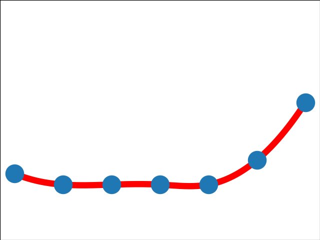
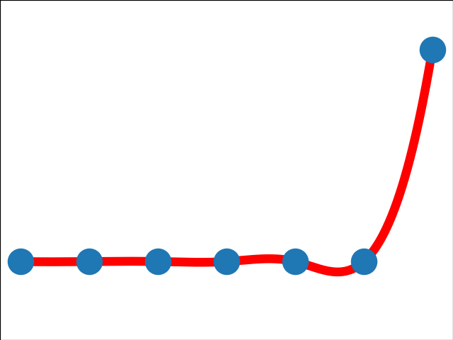
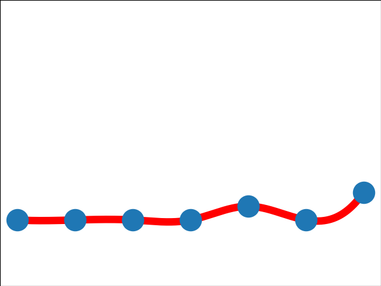
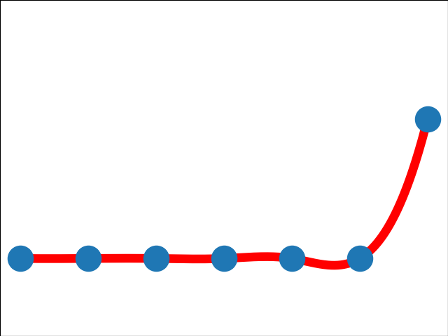

8.11
0.84
8.11
0.87
panewslab(04-02 13:31): 频频投资的DWFLabs是谁？「VC+做市商」，每月定投5个项目
5.41
0.13

5.41
-0.14

marsbit(04-02 09:48): zkSyncEra主网上线，你需要知道这些
5.41
0.64
5.41
0.58
| Topic | Hot | Trend | Trend for last 7 days | Related Chinese Articles | related English Articles | Related Tweets |
|---|---|---|---|---|---|---|
| Polygon | 8.11 |
0.84 |
 | odaily(04-02 16:30): 名人、企业采用首选？盘点在Polygon上构建的80个现实世界用例 | to be completed | to be completed |
| DWF | 8.11 |
0.87 |
 | blockbeats(04-02 11:00): 频频出手的DWFLabs是谁？「VC+做市商」，每月定投5个项目 panewslab(04-02 13:31): 频频投资的DWFLabs是谁？「VC+做市商」，每月定投5个项目 |
to be completed | to be completed |
| 中心化 | 5.41 |
0.13 |
|
blockbeats(04-02 14:58): FarcastervsLensProtocol全面测评：谁是更好的去中心化社交协议？ | to be completed | to be completed |
| zkSync | 5.41 |
-0.14 |
|
blockbeats(04-02 15:23): zkSyncEra∎主网上线，你需要知道这些 marsbit(04-02 09:48): zkSyncEra主网上线，你需要知道这些 |
to be completed | to be completed |
| zkEVM | 5.41 |
0.64 |
 | odaily(04-02 12:50): V神最担心的“zkEVM多客户端问题”，终于有解决方案了 | to be completed | to be completed |
| Arkstream | 5.41 |
0.58 |
 | odaily(04-02 16:23): ArkstreamCapital：Blur与OpenSea的悬崖赛车 | to be completed | to be completed |